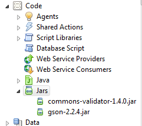

REST Consumption
RESTful APIs have seen prolific growth in the last few years. Not only has it made for faster transactions between servers and clients, it's also become a great standard for server-to-server transmission of data. While many may argue in favor of SOAP or XML-RPC, I'm not going to debate those merits for or against. If you are most comfortable with XML, go for SOAP as 1) it uses XML and 2) is supported (to the 1.1 standard) natively in Domino as native Web Service Providers/Consumers elements. For even more on SOAP in Domino, I recommend checking out calling web services from XPages, the missing part by Fredrik Norling; the link to his Notes in 9 video on the topic is on the article page.
What Makes REST Good
RESTful APIs make use of JSON as their data medium; either via application/json or JSONP. As a general rule, I find JSON syntax to be more readable by nature, as key: value pairs, comma separated as opposed to the encapsulated method with XML, such as <key>value</key>. Additionally, JSON compacts a (little) bit better than XML. This makes it well suited in the modern age with mobile devices lurking around every corner. For a more thorough examination of REST vs SOAP, please check out this StackOverflow answer or this article. Basically, SOAP (and XML-RPC, its quintessential predecessor) has been around for a while and is used by many major organizations and still performs well, so it's far from dead. I just believe the same benefits of REST can apply to server consumption.
Using REST in Java
For the places I make use of server-to-server REST, it's usually to stitch together some custom joining of data between multiple Domino files. This is not ideal as it makes for additional computations when they (arguably) should exist together already. I do regard myself as a "realist" though, so sometimes I have to acquiesce to the will of my admins and deal with the cards as they are dealt. My example use cases all sound just plain weird out of context of our existing systems, so I'm going to let you all imagine a use case of your own. Ultimately, from the consumer I wish for my call against a parameterized RESTful endpoint to produce the JsonObject (I'm using Google's GSON library) of the data I'm looking for. An alternate method, to keep the data independent of needing to invoke a Google GSON class would be to return the string-ified version then, if you're using SSJS, perform the toJson or JSON.parse on the string.
My Sample Java Consumer
package com.eric.restful;
import java.net.URL;
import java.net.URLConnection;
import java.io.BufferedReader;
import com.google.gson.*;
import java.io.InputStream;
import java.io.InputStreamReader;
import java.io.IOException;
import java.net.MalformedURLException;
import org.apache.commons.validator.routines.*;
/**
* Class with a single, public, static method to provide a REST consumer
* which returns data as a JsonObject.
*
* @author Eric McCormick, @edm00se
*
*/
public class CustRestConsumer {
/**
* Method for receiving HTTP JSON GET request against a RESTful URL data source.
*
* @param myUrlStr the URL of the REST endpoint
* @return JsonObject containing the data from the REST response.
* @throws IOException
* @throws MalformedURLException
* @throws ParseException
*/
public static JsonObject GetMyRestData( String myUrlStr ) throws IOException, MalformedURLException {
JsonObject myRestData = new JsonObject();
try{
UrlValidator defaultValidator = new UrlValidator();
if(defaultValidator.isValid(myUrlStr)){
URL myUrl = new URL(myUrlStr);
URLConnection urlCon = myUrl.openConnection();
urlCon.setConnectTimeout(5000);
InputStream is = urlCon.getInputStream();
InputStreamReader isR = new InputStreamReader(is);
BufferedReader reader = new BufferedReader(isR);
StringBuffer buffer = new StringBuffer();
String line = "";
while( (line = reader.readLine()) != null ){
buffer.append(line);
}
reader.close();
JsonParser parser = new JsonParser();
myRestData = (JsonObject) parser.parse(buffer.toString());
return myRestData;
}else{
myRestData.addProperty("error", "URL failed validation by Apache Commmons URL Validator");
return myRestData;
}
}catch( MalformedURLException e ){
e.printStackTrace();
myRestData.addProperty("error", e.toString());
return myRestData;
}catch( IOException e ){
e.printStackTrace();
myRestData.addProperty("error", e.toString());
return myRestData;
}
}
}
You'll notice I've an extra feature to my CustRestConsumer class. On being invoked, it validates the string according to the Apache Commons URLValidator. If it fails this, my class returns a JsonObject with property error set to true and the exception message. If it's successful, it just establishes the URLConnection, receives the InputStream and via the StringBuffer puts the response out into my myRestData JsonObject via the JsonParser. Please feel free to use and/or modify as you need and, as usual, if someone has a better way of doing it, I'd love to see it.
To See It In Action
If you're looking to play with this without generating your own use case, try out the following XPage. In the beforePageLoad phase of the JSF lifecycle, it imports the Java package, creates a string which is the URL representation of Google's feed reader service (which formats RSS, Atom, etc. into a standardized format) with the source of NPR's News RSS feed, and then puts the processed data into a viewScope variable. To display the entries, all I needed was to access the contents from a Data View, Data Table, or Repeat control and reference the object's properties by key. In my opinion, a greatly simple way of accessing the data in an XPage'd fashion, which reads a lot like two-way binding in client-side JavaScript frameworks.
xml version="1.0" encoding="UTF-8"?>
<xp:view
xmlns:xp="http://www.ibm.com/xsp/core">
<xp:this.beforePageLoad></xp:this.beforePageLoad>
<xp:dataTable
id="dataTable1"
rows="30"
var="rowData"
indexVar="rowCount">
<xp:this.value></xp:this.value>
<xp:column
id="column1">
<xp:this.facets>
<xp:panel
xp:key="header"
tagName="h1">
<xp:link
escape="true"
id="link1">
<xp:this.text></xp:this.text>
<xp:this.value></xp:this.value>
</xp:link>
</xp:panel>
</xp:this.facets>
</xp:column>
<xp:column
id="column2">
<xp:panel
tagName="h3">
<xp:link
escape="true"
id="link2"
text="#{javascript:rowData.title}"
value="#{javascript:rowData.link}">
</xp:link>
</xp:panel>
<xp:br></xp:br>
<xp:text
escape="false"
id="computedField2"
value="#{javascript:rowData.content}">
</xp:text>
<xp:br></xp:br>
</xp:column>
<xp:column
id="column3">
<xp:text
escape="true"
id="computedField3"
value="#{javascript:rowData.publishedDate}">
</xp:text>
</xp:column>
</xp:dataTable>
</xp:view>
[update: the fromJson call was added to this gist since original posting]
JAR Resources
I've used two Java ARchive resources (JARs)) in my example CustRestConsumer class. A JAR can be opened easily, as it's essentially a zipped folder with a given structure. One of the best aspects of Java development is the ability to use and provide these self-contained archives with resources, making Java a fairly modular language, allowing you to build your own constructs on common building blocks. Essentially, why reinvent the wheel when you can use someone else's wheel class?
Per request, here's a breakdown of where you can get the two libraries I used; the Apache Commons Validator library, for the URLValidator, and the Google GSON library, for the ease of building and returning a JSON Object. To bring these files into an NSF, merely import them as Code > JAR elements in Designer, as such: 
{kind=link}